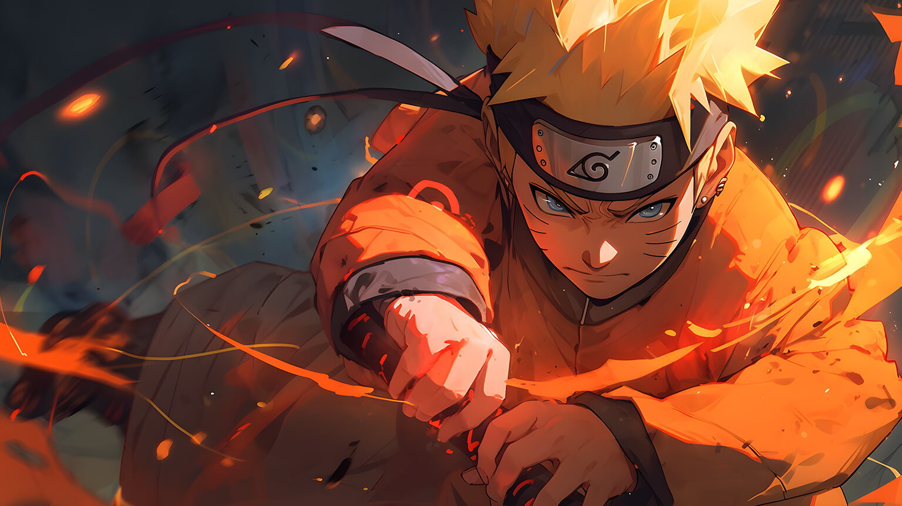
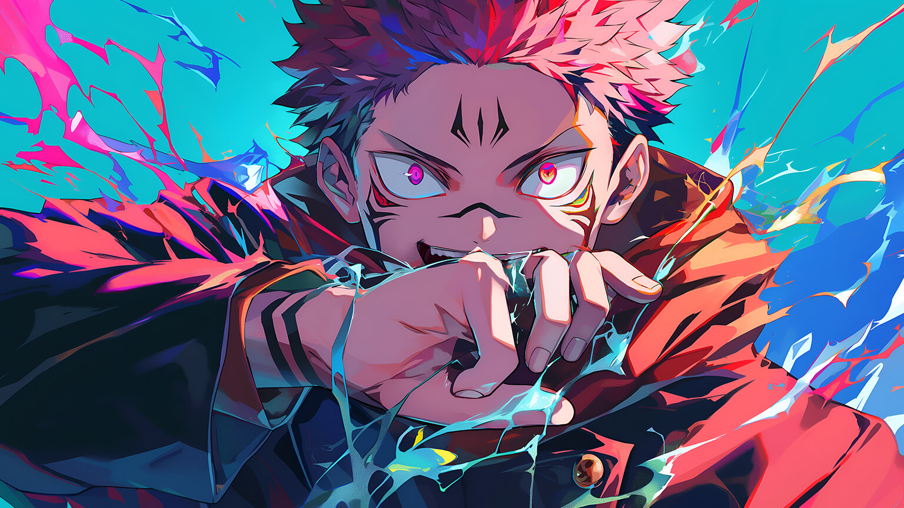
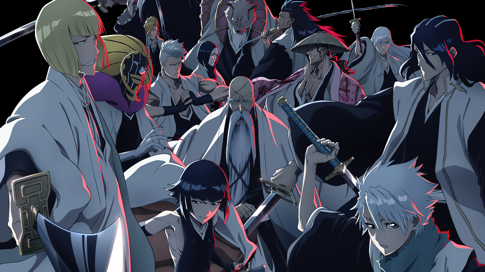

Crispyroll, tu mejor plataforma de Anime
Naruto quiere ser el mejor ninja en la tierra. La acción comienza tras los dos años y medio que el protagonista, Naruto Uzumaki, ha pasado entrenando con su maestro Jiraiya. En ella reaparecen todos los personajes de la serie anterior pero con más experiencia y fuerza. Además, la Organización Akatsuki entra en acción, tras su breve aparición en la parte anterior, y se revelan sus objetivos.
Yuji Itadori se traga un dedo maldito para salvar a alguien de su clase y ahora Ryomen Sukuna, un poderoso hechicero malvado conocido como el Rey de las Maldiciones, vive en su alma. Las maldiciones son seres sobrenaturales creadas a partir de las emociones negativas de los humanos. Esta energía maldita puede usarse como fuente de poder por parte de los hechiceros y de los espíritus malditos.
Ichigo Kurosaki, un adolescente que tiene la facultad de interactuar con los espíritus, se encuentra una noche con una shinigami (personificación del Dios de la Muerte en la cultura japonesa) llamada Rukia Kuchiki, quien se sorprende cuando se da cuenta de que este joven puede verla. Rukia es una soldado encargada con la tarea de trasladar el alma de los muertos desde el mundo de los vivos hasta el más allá.
Goku es un extraño y alegre niño que pasa sus días cazando y comiendo hasta que un día conoce a Bulma, una chica muy linda, inteligente y que solo piensa en chicos. Bulma está buscando las Dragon Balls, unas esferas mágicas que se dice que si se reúnen las siete, se te concederá cualquier deseo, ¡y Goku tiene una que le dejó su abuelo como recuerdo! Esto será el inicio de una gran aventura.

Monkey D. Luffy se niega a que nadie se interponga en su camino para convertirse en Rey de los Piratas. Se lanza a surcar los mares y se convertirá en un capitán dispuesto a no darse por vencido jamás hasta hacerse con el mayor tesoro de la historia: el legendario One Piece.

Nuestras recomendaciones